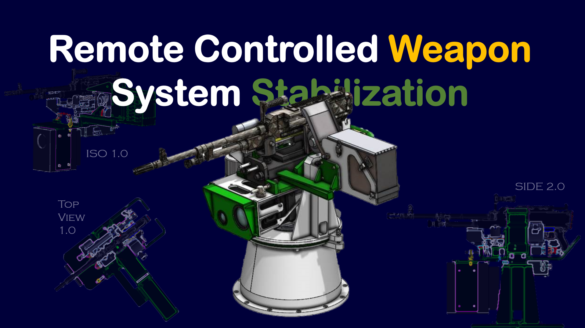
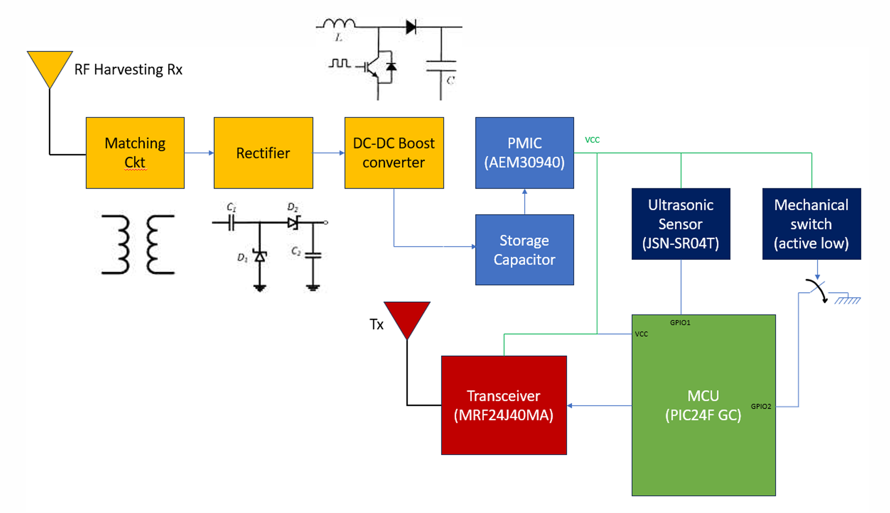

PROJECTS / THEORY INTO PRACTICE
Built to
respond.
Selected engineering work, from prototype propositions born out of brainstorming sessions to digital twins built for industrial use.

Defence Product · 2026
Remote Controlled Weapon Station Stabilization
Tracking and control architecture for a 7.62 mm RCWS, developed at the DiRo Lab, IIT Madras, with Electro Pneumatics & Hydraulics Pvt. Ltd.
OPEN PROJECT DOSSIER ↗
IoT Framework Ideation · 2025
An RF-Energy-Harvesting Architecture for Smart Waste Monitoring
This ideation was the basis upon which I was offered a project associate role through a competitive selection at the Smart City Research Center, IIIT Hyderabad. I analyzed the feasibility of a battery-less RF energy harvesting based solution for smart urabn waste management.
OPEN PROJECT DOSSIER ↗